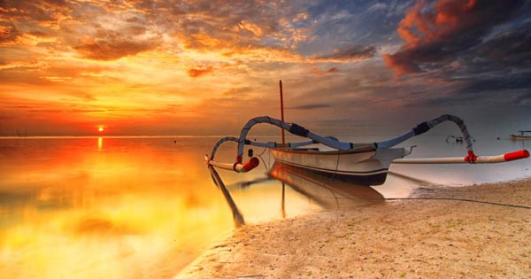
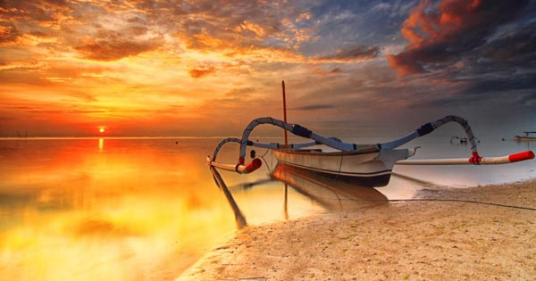

Pantai Sanur
Pasir di pantai Sanur berwarna putih dan air laut cenderung dangkal. Selain itu, anda akan banyak melihat perahu traditional nelayan yang berjajar di pi
nggir pantai Sanur. Perahu-perahu tersebut memiliki warna yang menarik dan indah untuk dilihat.
Selain untuk melihat sunrise, pantai Sanur juga sering digunakan oleh fotografer profesional untuk mengambil foto pre wedding, dengan latar belakang mat
ahari terbit, serta perahu traditional yang bewarna-warni.
Karena ombak di pantai Sanur sangat tenang, maka pantai Sanur lebih banyak dikunjungi wisatawan yang ingin melakukan aktivitas snorkeling dan meny
elam. Jika anda ingin melakukan surfing, pantai Sanur tidak cocok untuk anda.
 @EXPLORINA_OFFICIAL
@EXPLORINA_OFFICIAL
 Jalan Kalimantan
Jalan Kalimantan  Explorina@gmail.com
Explorina@gmail.com 081232019802
081232019802